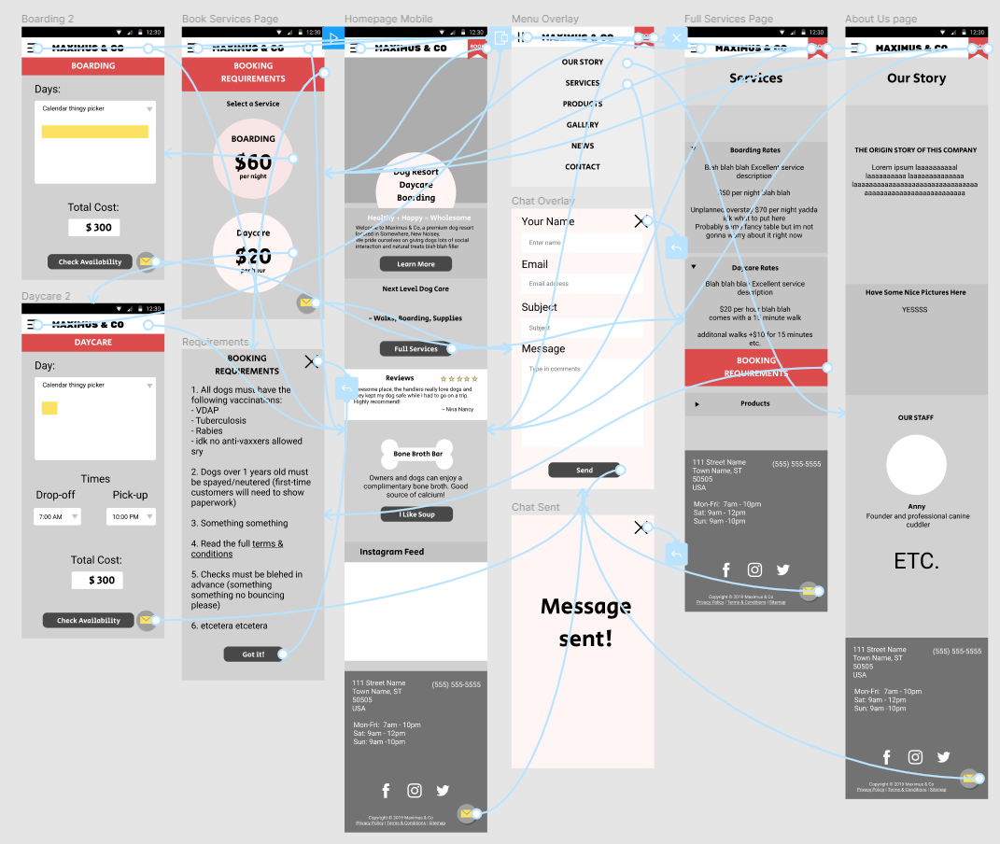

Hi, I'm Gale.
Frontend UI Developer
Commissions
Stuff:
From Prototype to Site
Mobile-first design

- Copious flexbox
- Gulp precompile for static sites
- See Demo
- Pick dates from extraneous months
- Pick multiple dates
- Part of a calendar maker app (Work-In-Progress)
Performance
Insta(gram)Dict(tionary)
What Instagram thinks each word means.
- Ola interpolation library
- Illusory 3D rendering with Zdog